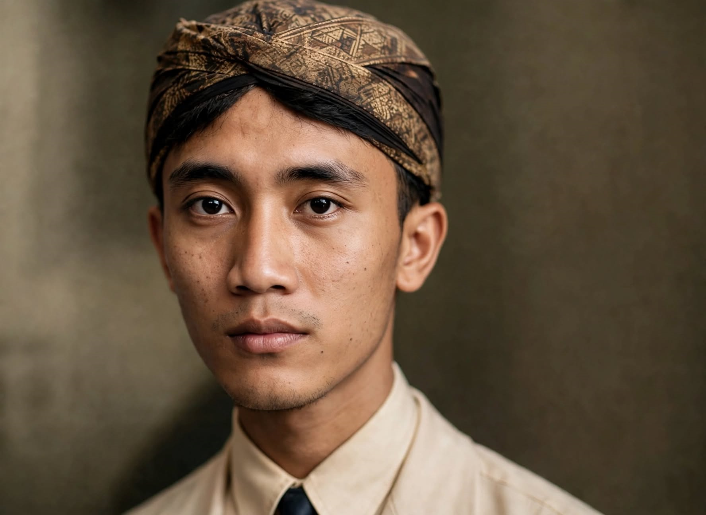
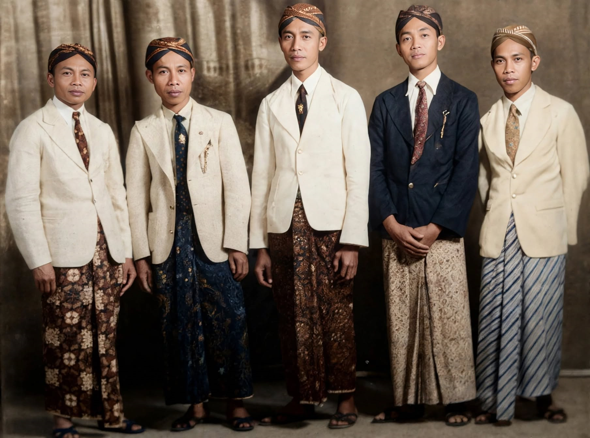
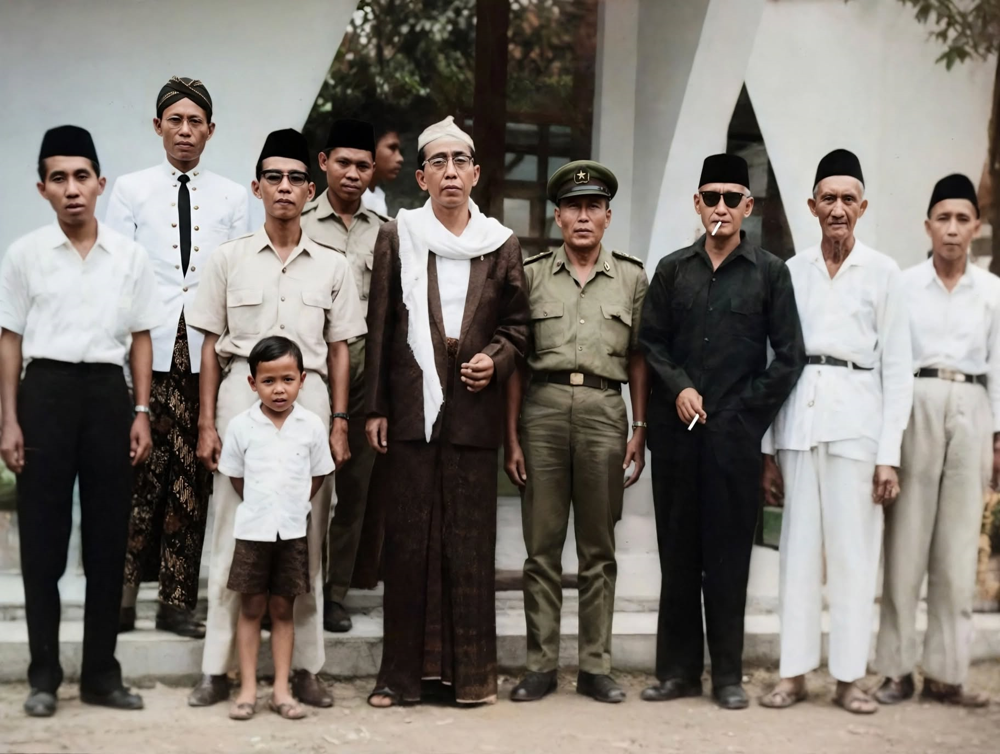

1917 • Lahir di Grenggeng1992 • Wafat di Gunung MujilPensiunan Depag Kebumen
Mbah Samirun
Beberapa anggota keluarga, terutama generasi ketiga keluarga besar mbah Samirun barangkali banyak yang tidak tahu mengenai simbah mereka.
Oleh karena itu pada artikel ini saya akan menyampaikan beberapa hal yang mudah-mudahan bisa menambah pemahaman mereka mengenai mbah Samirun.

Mbah Samirun ketika masih remaja
Mbah Samirun lahir di Grenggeng Kemit pada tahun 1917 dan menghabiskan masa kecilnya di sana. Ketika menginjak usia remaja mbah Samirun aktif di
organisasi Islam Masyumi. Selain giat di organisasi mbah Samirun juga sempat nyantri di pondok pesantren Salafiyah Wonoyoso yang ketika itu diasuh
oleh mbah Kyai Nasokha.

Mbah Samirun dan empat sahabatnya
Seperti tersebut di dalam salah satu novel yang ditulis oleh Syaifudin Zuhri (Mentri Agama di era Presiden Sukarno) mbah Samirun
dan sahabatnya mbah Basiran adalah dua orang santri yang sempat bertemu dengan beliau. Kemudian pada masa kejayaan Nahdhotul Ulama, mbah Samirun
aktif di organisasi ini dan sempat menjadi wakil rakyat (anggota DPRD) di daerah Kabupaten Kebumen selama dua periode.

Mbah Samirun dan beberapa sejawatnya
Mbah Samirun meninggal pada tahun 1992 di Dukuh Gunung Mujil / Kelurahan Bumirejo / Kabupaten Kebumen, dengan status sebagai pensiunan pegawai
Kantor Departemen Agama Kabupaten Kebumen. Sementara mbah Samirun putri yaitu mbah Siti Murlingah meninggal pada tahun 2007 di Dukuh Wonoyoso /
Kelurahan Bumirejo / Kabupaten Kebumen. Tepatnya di rumah petilasan yaitu di Gg. Walikonang 3 No 9 / RT 03 RW 05.
Mbah Samirun dimakamkan di makbaroh Dukuh Gunung Mujil, sedangkan mbah Siti Murlingah di makamkan di makbaroh Dukuh Wonoyoso. Kebetulan kedua
Pedukuhan ini terletak berseberangan jadi jarak antara keduanya tidak begitu jauh. Demikian beberapa hal yang bisa saya sampaikan mengenai
mbah Samirun almarhum dan mbah Siti Murlingah almarhumah, mudah-mudahan bermanfaat.